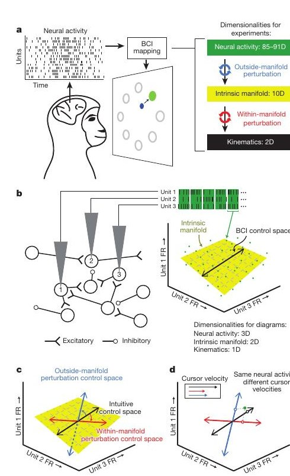
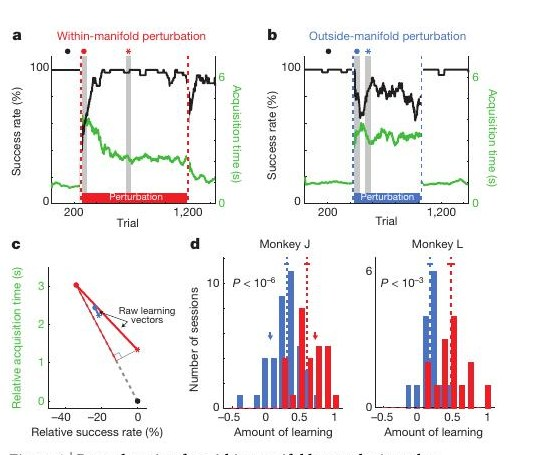
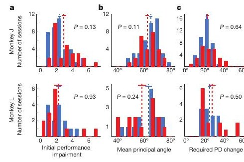
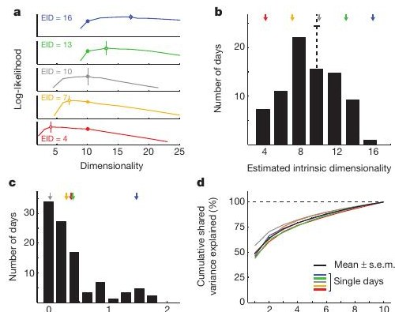

Calibration
Estimate the intrinsic manifold with factor analysis and calibrate an intuitive mapping from factors to cursor velocity.
The whole paper in 5 minutes 🧠💥
The big idea: your brain is not a magic keyboard where every possible note is equally easy to play. It is more like a band with habits. Some new songs reuse grooves the band already knows. Other songs ask every musician to invent totally new coordination at once. This paper asks whether learning obeys that difference.
What they did: two monkeys moved a computer cursor using signals from their motor cortex. The researchers first found the normal patterns in the recorded brain cells. Then they changed the brain-to-cursor rule in two ways.
What they found: the monkeys adapted much better when the new rule stayed inside the brain's normal activity zone. They struggled when success required activity patterns outside that zone, even though those patterns would have moved the cursor correctly.
The careful part: the authors checked boring explanations. Maybe one mapping was just initially harder. Maybe the cursor rule was farther away. Maybe individual neurons needed bigger tuning changes. Maybe the monkeys moved their hands. The checks did not explain the main split.
The punchline: learning is not only about wanting the right outcome. It also depends on whether the brain can quickly produce the activity pattern that outcome demands. Existing circuit structure gives learning a preferred road network.
The monkeys learned new brain-control rules quickly when those rules reused normal motor-cortex activity patterns, but struggled when success required unfamiliar cell-to-cell coordination. The brain can adapt, but it adapts fastest along paths its network already makes available.
The Question
Sadtler et al. used a closed-loop brain-computer interface to separate two kinds of learning: reusing existing population co-modulation patterns versus learning new co-modulation patterns among recorded neurons.
The paper's central object is the intrinsic manifold: a low-dimensional subspace that captures the major ways recorded motor-cortex units naturally co-vary during a calibration block. The authors ask whether fast BCI learning is constrained by this manifold.
Key Concepts
Click a card. Each definition ties the vocabulary to the experiment rather than leaving it as math fog.
Interactive Widget
The reader should see the geometry first: the same neural activity point can drive different cursor velocities depending on how the control space is oriented.
The cursor starts with a rule the monkey can use well. The control space lies inside the intrinsic manifold estimated from natural co-modulation.
The monkey sees a cursor, a center position, and one of eight radial targets.
A vector of spike counts is mapped to factors, then to horizontal and vertical cursor velocity.

Perturbation Logic
Both perturbation types hurt performance at first. The difference is what the monkey has to learn to recover.
What changes: which natural factor pattern moves the cursor in which direction.
What stays familiar: the recorded units can keep using their normal co-modulation patterns.
What changes: the cursor-relevant control space leaves the familiar manifold.
What becomes hard: the animal must find new coordination patterns among neural units.
Method
Every day starts by measuring the animal's current neural repertoire, then asks whether a perturbation can be learned in the same session.
Estimate the intrinsic manifold with factor analysis and calibrate an intuitive mapping from factors to cursor velocity.
The monkey uses the intuitive mapping: 400 trials for monkey J or 250 trials for monkey L.
Switch seamlessly to a within- or outside-manifold mapping: 600 trials for J or 400 for L.
Return to the intuitive mapping for 200 trials. Brief impairment here becomes an after-effect signal that learning occurred.
Results
The key outcome combines success rate and target acquisition time into an amount-of-learning metric: 0 means no recovery, 1 means full recovery to baseline.

Controls
The paper is strongest when it shows that the split is not simply because one perturbation class was more awkward at the cursor level.
Within- and outside-manifold perturbations caused comparable early performance drops. Figure 3a reports P = 0.13 for monkey J and P = 0.93 for monkey L.
The principal angles between intuitive and perturbed control spaces were comparable: P = 0.11 for monkey J and P = 0.24 for monkey L.
Predicted changes in individual neural-unit preferred direction did not differ meaningfully: P = 0.64 for monkey J and P = 0.50 for monkey L.
For monkey L, the authors constrained outside-manifold perturbations so the search space size matched the within-manifold case.
Extended Data Fig. 5 shows hand speeds during BCI control were minimal compared with a normal point-to-point reaching task.
Returning to the intuitive mapping produced larger after-effects after within-manifold exposure, consistent with more learning.

Dimensionality
This is a good place to be precise: the paper does not claim motor cortex is truly ten-dimensional. It says a 10D model captured prominent co-modulation patterns well enough for this experiment.
The authors also note that estimating the manifold incorrectly would tend to weaken, not inflate, the observed difference. Overestimating would contaminate nominal within-manifold sessions; underestimating would contaminate nominal outside-manifold sessions.

Implications
The result is not just about cursor control. It reframes fast learning as reuse of existing population dynamics.
Decoder changes that align with natural population structure should be easier for users to learn quickly than changes that demand unnatural coordination.
The paper gives a network-level reason why related skills are easier than unrelated ones: they can share an intrinsic manifold.
Low-dimensional projections are not merely plotting conveniences. In this experiment, they predicted which causal perturbations were learnable.
Limits
The claim is sharp, but bounded: fast BCI learning in this controlled motor-cortex setup.
Quiz
Each answer explains the logic, not just the label.
comment/feedback
The local version can collect targeted notes, preserve anchors, and let Codex process only unhandled feedback batches.
This tab is the review surface for the explainer. Highlight wording, select an element, or add a general note; submitted batches are saved locally so Codex can process the comments and update this page.
Use the launcher or the button below once the local feedback runtime is running.
Highlight confusing text, select a diagram, or leave a general page comment.
The server appends the review to the local inbox for processing.
Local inbox: /Users/sukanth/Documents/explain-like-brain-dead/papers/nature13665-neural-constraints/feedback/inbox.jsonl